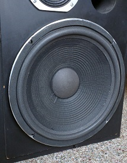

Speaker Restoration
Do your speakers need a little love and care? Let me fix them for you!
I can pick up and drop off your speakers within the Durango area at no charge.
All work is performed locally!
- Refoam with new surrounds ($75 ea / $125 pr, parts included)
- Re-cone or full rebuild ($125 ea / $225 pr, basic parts included)
- Dust cap repair ($25 ea + parts)
- Cross-over repair or refreshing ($75/hr + parts)
- All repairs include cleaning and inspection
Other speaker restoration work is estimated on an individual basis depending on the
speaker model and the work done.

Custom Design
Sometimes there are no off-the-shelf solutions for a process you would like to automate.
A custom controller may be an easy way to achieve your goals.
About Sesh
I've been experimenting and designing custom systems appications for years.
With working experience in breweries, with process control, as well as electronics repair and programming,
I have a very flexible working knowledge of systems controls.
Contact Sesh
Login